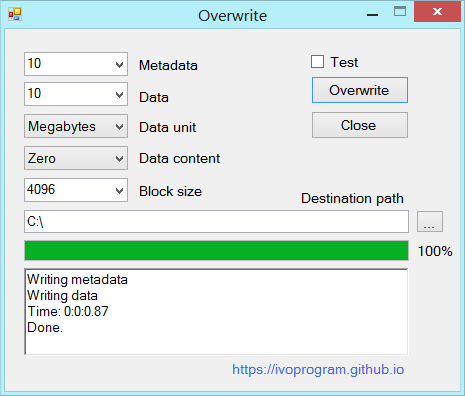

Overwrite is a program that overwrites empty space on disk, data and metadata.
The empty space on disk can contain sensitive data and information that can be recovered with recovery software and forensic, this can be privacy and security risk.
The operating systems and programs automatically write and delete data on disk, for example text editors may save copies of the document for recovery and later delete them. Also when users delete files they are only marked as deleted but the files remain on disk and can be recovered.
To protect privacy and security the remaining data on empty space on disk has to be overwritten.
To properly clean remaining data both metadata as file names and content has to be overwritten, this program has parameters as -dirs and -data that specify quantity of metadata and data has to be overwritten.
Source code and executables for different architectures and operating systems can be found in code repositories.
Overwrite program is written in C programming language it is contained in one file, can be compiled on different operating systems and also can be used without compilation, the source code can be run directly with Tiny C compiler ex: tcc -run overwrite.c
Source Code and ExecutablesOverwrite empty space on disk, metadata and data. USAGE: overwrite [-h -v -test -one -rand -block:] (-dirs: &| -data:) -path: -h Print help and usage message. -v Print program version. -test For test, don't delete written files. -one Overwrite with 1, default with 0. -rand Overwrite with random data, default with 0. -block Block size, default 4096 bytes as NTFS and EXT4. -dirs Number of directories to write, ex: 10, 100. -data Quantity of data to write, ex: 1mb, 1gb, all. -path Path to directory where to write files. EXAMPLE: Write 10 dirs and 10Mb data, on Windows overwrite -dirs:10 -data:10mb -path:c:\ Write random data, block size 512 bytes on Linux overwrite -rand -block:512 -data:10mb -path:/mnt/usbdisk/ Copyright GPLv3 http://github.com/ivoprogram/overwrite
Metadata
Overwrite metadata 10 entries/files
overwrite -dirs:10 -path:c:\
Data
Overwrite data all empty space
overwrite -data:all -path:c:\
Overwrite program write files and directories using operating system functions, and in this way overwrite the remaining metadata and data on disk.
When operating system delete file the file and space used by it is marked as free for new files, but the data is not cleaned and remain on disk, so when the new files are written the remaining data is overwritten.
The file system is similar to dictionary has metadata that is summary information about the files and then data, writing many directories overwrite metadata, and writing big file overwrite data, that is what overwrite program does.
Overwrite of metadata is not always guaranteed, this depends on different factors as number
of files written, file system.
For example on FAT file system metadata has to be overwritten in the same directory of the
deleted files.
Metadata should not be filled all at once
, the parameter -dirs should be
number of files to overwrite for example 100, 1000, it is not good practice more
than 10.000.
NTFS file system on Windows metadata structure grow for maximum number
of files written at one poin in time, when files are deleted
metadata entries are marked as free and ready for new files
but space is not released.
More details on link:
NTFS Master File Table Expansion